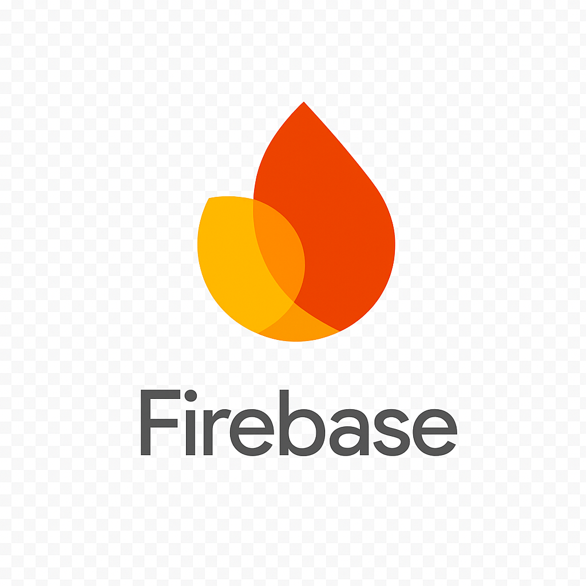

Undergraduate student at Sangmyung University (Computer Science)
Passionate about computer graphics rendering and 2D/3D development with Unity
Built multiple projects using OpenGL and Unity 2D/3D
C++ & C# Unity 2D/3D
👋 Hello, I'm Jeyoung Park!
“I aspire to transform my imagined graphics into real-time renderings.”
For the procedure that ranges from OpenGL-based rendering to 3D navigation system using Unity,
I have explored applying animation systems, creating custom pathfinder & advanced 3D visualization system, and interaction design.
🏫 Education
- Sangmyung University, Seoul, Korea ( 2020.03 ~ Expected to graduate in 2026.02 )
- Bachelor of computer science, 4th year student
🧩 Main Projects
🪨 'The Rolling Stone' Game (2025.04 ~ 2025.06)
C++, OpenGL, Bullet Physics, Skeletal Animation based 3D physics simulation

- Optimized matrix frame updates for better FPS
- Implemented Physics Debug Drawer
- Natural animation synchronization with character-object interactions
⚙️ Rendering Code Snippet
// ======== MAIN RENDER LOOP ========
while (!glfwWindowShouldClose(window))
{
// 1) Calculate FPS
float currentFrame = static_cast(glfwGetTime());
if (!VSYNC && currentFrame - lastFrame <= frameTime) continue;
deltaTime = currentFrame - lastFrame;
lastFrame = currentFrame;
// 2) Update view-projection matrices
glm::mat4 projection = glm::perspective(glm::radians(camera.Zoom),
(float)WINDOW_WIDTH / (float)WINDOW_HEIGHT, 0.1f, frustum_far);
glm::mat4 view = camera.GetViewMatrix();
// 3) Start physical simulation
dynamicsWorld->stepSimulation(deltaTime);
// 4) Update player's position using bullet library
btTransform trans;
characterBody->getMotionState()->getWorldTransform(trans);
btVector3 btPos = trans.getOrigin();
character->position = glm::vec3(
btPos.getX(),
btPos.getY() - gTotalColliderHeight * 0.5f + 0.05f,
btPos.getZ());
// 5) Processing user's input
processInput(window, defaultAnimations, runAnimations);
// 6) Check collision
// ... // Collision with ground, Detect slope, Collision with other object
// 7) Update animation matrices
glm::mat4 model = glm::mat4(1.0f);
animator.updateAnimation(deltaTime);
updateNodeTransformations(root, model);
auto transforms = animator.getFinalBoneMatrices();
// 8) Root rendering
renderNode(root);
// 9) Line Debug & GUI
// ... // ImGui Panel
// 10) Terminate the frame
glfwSwapBuffers(window);
glfwPollEvents();
}
🛠️ Role: Physics system design, animation optimization, logic improvements
🔗 Github Source: 'The Rolling Stone Game' Repository
🧭 Talk & Go: 3D Campus Guide System in Sangmyung University (2025.03 ~ 2025.09)
Unity 3D, Firebase, OpenAI API powered 3D campus navigation system

📸 Demo Highlights
(1) Sign-up

(2) Login

(3) Path Finder(Go)

(3-1) Path Visualizer(Go)

(4) Chatbot Q & A(Talk)
📁 System Development Overview
| Component | Language | Tech Stack | Internal Features | External Integration |
|---|---|---|---|---|
|
|
C# |
|
|
|
|
|
Python |
|
|
|
|
|
JavaScript |
|
|
|
|  Firebase |
|
|
|
🔧 Technical Details
- Path Finder: The terrain-based pathfinding system (two NavMeshes & a custom Dijkstra algorithm)
- Path Visualizer: The visualization system using a custom class named "LineDebugger"
- After the initial NavMesh: next NavMesh evaluates whether the path passes between specific corner objects, generates virtual walls, and derives alternative detour routes
- Designed ChatGPT-powered interactive Q & A system
- Implemented user sign-up and login functionality using Firebase, and developed features to save and retrieve Chat-GPT Q & A logs
Two NavMeshes
Dijkstra
// ================= PATH3 (DIJKSTRA)=================
public List<Vector3> Dijkstra(string startNode, string endNode)
{
Dictionary<string, float> distances = new();
Dictionary<string, string> previous = new();
List<string> unvisited = new(nodes.Keys);
foreach (var node in nodes.Keys)
distances[node] = float.MaxValue;
distances[startNode] = 0;
while (unvisited.Count > 0)
{
// 1️. Select the node that has min distance far
string current = unvisited.OrderBy(n => distances[n]).First();
unvisited.Remove(current);
// 2️. Finish if the node ends
if (current == endNode)
break;
// 3️. Search an adjacent node
foreach (var neighbor in nodes[current].neighbors)
{
float alt = distances[current] + Vector3.Distance(
nodes[current].position, nodes[neighbor].position);
if (alt < distances[neighbor])
{
distances[neighbor] = alt;
previous[neighbor] = current;
}
}
}
// 4️. Backtrack shortest path
List<Vector3> path = new();
string nodeTrace = endNode;
while (previous.ContainsKey(nodeTrace))
{
path.Insert(0, nodes[nodeTrace].position);
nodeTrace = previous[nodeTrace];
}
path.Insert(0, nodes[startNode].position);
// 5️. Visualization
pathLineDrawer3.DrawPath(path);
UIDebugTextAnimator.Instance.debugTextMsg.text = "Dijkstra Path Complete";
UIDebugTextAnimator.Instance.AnimateAll();
return path;
}
🛠️ Role
- Unity: Developed user interface and core logic
- Firebase: Implemented sign-up and login features; saved and retrieved Chatbot Q & A logs
- Full-stack Web: Integrated Django with Firebase and connected Django with Unity
✨ Special Notes
- Unity WebGL: As the Firebase SDK is not supported in Unity WebGL, Django was implemented as an intermediary to enable Firebase ↔ Unity integration through REST APIs
🔗 Github Source: University Campus Map Navigation System Repository
🎮 My Small Games
⚽ #1 Ball Collector Game (2025.02.02 ~ 2025.02.12)
Unity based 3D platformer mini-game inspired by GoldMetal tutorials

- Applied 3D physics and jump boost logic based on collectible triggers
- Used Sprite-based 2D user interface with stage status & retry conditions
- Designed level transitions across three different map scenes
🎮 Game Overview
🛠️ Role: Solo development
🔗 Github Source: Ball Collector Game Repository (Github)
📝 Notion Source: Ball Collector Game Note (Notion)
🎯 #2 Get Coin Game (2025.02.16 ~ 2025.03.15)
Unity based small-scale game project

- 2D jump logic based on item triggers with physical colliders applied
- User interface implemented using 2D sprites
- Stage-based game structure utilizing three distinct scene layouts
🎮 Game Overview
- A game where players collect different types of coins while avoiding enemies (using arrow keys)
- There are four types of potions, each providing the following effects
- Red Potion: Restores one unit of health
- Green Potion: Grants a one-time double jump
- Blue Potion: Temporarily increases jump power
- Yellow Potion: Grants temporary invisibility - There are two types of portals, each providing the following effects
- Red Portal: Instantly teleports the player to a linked portal
- Black Portal: Moves the player to the next stage - Escape the wide stage within the given time!
🛠️ Role: Solo development
🔗 Github Source: Get Coin Game Repository (Github)
📝 Notion Source: Get Coin Game Note (Notion)